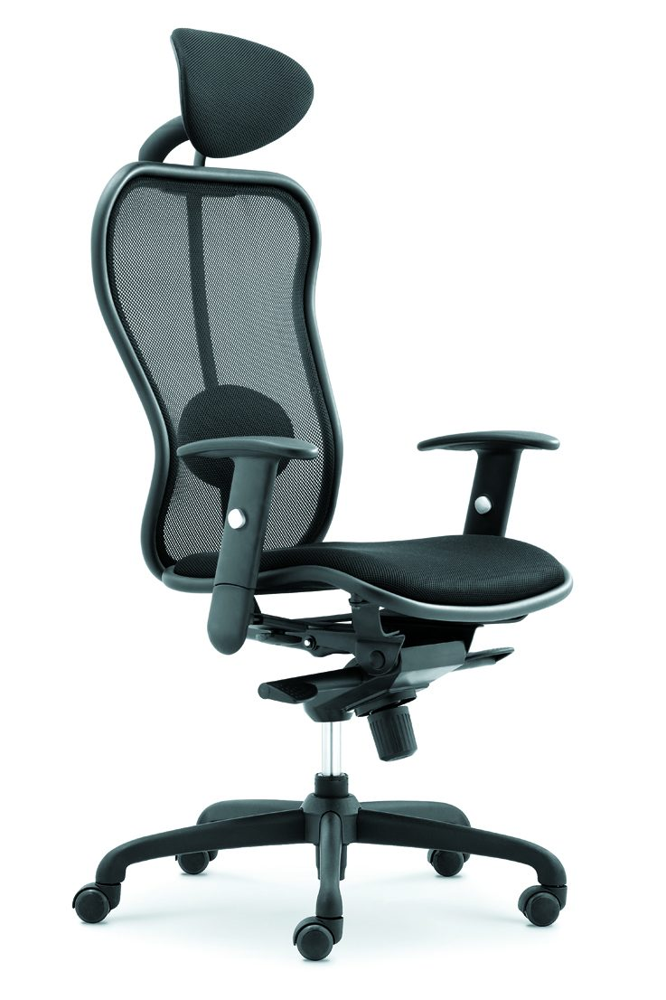

Selection Advice
这个会议椅型号适合哪些办公家具项目？
CM-F85AS-1 适合会议室、培训室、接待洽谈区和项目批量配套。会议椅通常需要与会议桌、洽谈桌和空间色调统一考虑。
对于企业总部、学校、政企项目和经销商批量采购，会议椅页面可以帮助客户先完成型号识别，再进入整体空间方案沟通。
适合客户
企业会议室采购、工程项目方、学校培训空间、经销商。
核心关键词
会议椅、会议办公椅、佛山办公椅厂家、会议室家具配套。
Project Inquiry
需要会议椅或会议室整体配套方案？
告诉我们会议室面积、座位数量和项目周期，虹桥办公家具可以协助你匹配会议桌椅和整体办公家具方案。